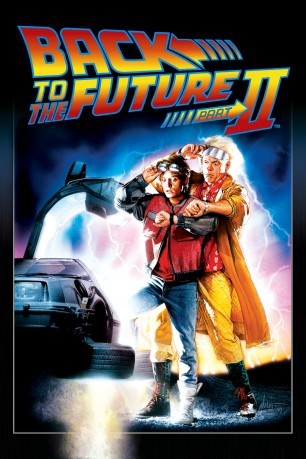

Auszeichnungen: für 1 Oscars nominiert 1 BAFTA-Awards gewonnen
 gesehen am 30.08.2016
gesehen am 30.08.2016Alternativ: Back to the Future Part II
Auszeichnungen: für 1 Oscars nominiert 1 BAFTA-Awards gewonnen gesehen am 30.08.2016
 
 IMDB-Wertung: 7.8 / 10
IMDB-Wertung: 7.8 / 10  Metascore:
Metascore: 
Nachdem Doc Brown am Ende des ersten Teiles Marty mit in die Zukunft genommen hat, sieht er nun selbst, was aus ihm werden wird - ein abgehalfterter Angestellter, der am Ende der Karriereleiter steht.Marty und Doc Brown versuchen, der Zukunft einen kleinen Schubser in die richtige Richtung zu geben. Doch Biff gibt seiner eigenen Zukunft durch einen Fehler Martys eine neue Wendung - und dieser Fehler muß nun ausgebügelt werden...
Jahr: 1989
Dauer: 108 Minuten
FSK: 12
Land: USA Studio: Universal PicturesTonspuren:
Untertitel: Deutsch,
Auflösung: 720p (1280×688) Größe: 4474 MB
Genre: Abenteuer, Komödie, Sci-Fi
Regisseur:  Robert Zemeckis
Robert Zemeckis
Drehbuch: Robert Zemeckis, Bob Gale, Robert Zemeckis, Bob Gale, Bob Gale
Soundtrack: Alan Silvestri
Darsteller:
 Michael J. Fox als Marty McFly / Marty McFly Jr. / Marlene McFly
Michael J. Fox als Marty McFly / Marty McFly Jr. / Marlene McFly Christopher Lloyd als Doctor Emmett Brown
Christopher Lloyd als Doctor Emmett Brown Lea Thompson als Lorraine
Lea Thompson als Lorraine Thomas F. Wilson als Biff Tannen / Griff
Thomas F. Wilson als Biff Tannen / Griff Elisabeth Shue als Jennifer
Elisabeth Shue als Jennifer James Tolkan als Strickland
James Tolkan als Strickland Casey Siemaszko als 3-D
Casey Siemaszko als 3-D Billy Zane als Match
Billy Zane als Match Charles Fleischer als Terry
Charles Fleischer als Terry Jason Scott Lee als Whitey
Jason Scott Lee als Whitey Elijah Wood als Video Game Boy
Elijah Wood als Video Game Boy Flea als Needles
Flea als Needles George 'Buck' Flower als Bum
George 'Buck' Flower als Bum Neil Ross als Museum Narrator
Neil Ross als Museum Narrator Joe Flaherty als Western Union Man
Joe Flaherty als Western Union Man Crispin Glover als George McFly , archive footage
Crispin Glover als George McFly , archive footage Clint Eastwood als Joe , archive footage, uncredited
Clint Eastwood als Joe , archive footage, uncredited Mary Ellen Trainor als Officer Reese , uncredited
Mary Ellen Trainor als Officer Reese , uncredited Jim Ishida als Fujitsu
Jim Ishida als FujitsuDatei: X:\3-Trilogie(N-Z)\Zurück in die Zukunft\Zurück in die Zukunft 2 (1989, FSK12, 1280x688).mkv seit 14.02.2015
Festplatte: HD Collection-3(N-Z)-6(A-Z)
 Alle Filme aus Gruppe '3-Trilogie(N-Z)\Zurück in die Zukunft'
Alle Filme aus Gruppe '3-Trilogie(N-Z)\Zurück in die Zukunft'